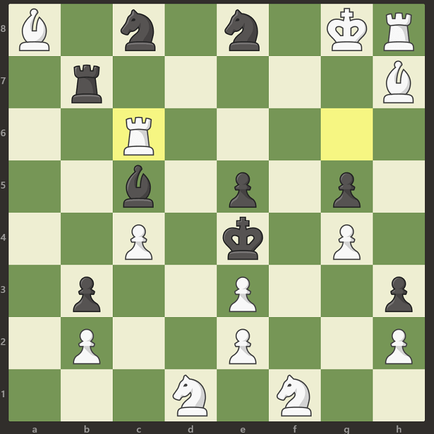

Pratik Mangalore
Home
Resume
Blog
Contact
ANSWER TO KARL FABEL's PUZZLE - 28th December, 2018
The answer to the chess puzzle is to move the rook on G6 to C6. While that does put a discovered check on the black king from the bishop, notice that black rook on B7 can simply eliminate the bishop on H7, hence prolonging the game. This puzzle is considered to be one of the more trickier ones to solve. If you were able to solve it, congratulations!

Reference :-
Click Here
THE PATH WE ALL TOOK - 28th December, 2018
Humans dominate the earth, at least in terms of how much they use the earth's resources, how ubiquitous is their presence, and how much damage they can do to the geological and ecological biospheres of earth.
Homo Sapiens Sapiens, is currently the only extant Human Specie on the surface of the earth. Just a few millennia ago, our cousins, the Neanderthals also co-existed along with us. Why then, is it that only we have survived the test of time? The answer does not lie within the realms of genetic superiority, but of cultural superiority. One can argue that the Homo Neanderthal is slightly stronger, and has better agility and tool-building skills than our own Specie. But no one can argue that it is ultimately the Homo Sapiens who dominated the earth. The reason for this, is that we believed in "us". Homo Sapiens was the first and only species to have developed the concept of faith in a power greater than their own, a power which rules over all of them and hence they feel united within the power's presence.
Let us imagine the following scenario - 50 Neanderthals living in 5 independent groups of 10 people live in the area which we now call Kiev. 50 Sapiens composed of 5 independent groups of 10 people live adjacent to this area. All these 10 independent groups recognize each other's presence. Now say that this geological area is graced by the natural phenomenon of the Aurora Sky. The difference in the 5 Neanderthals tribes and the 5 Sapiens tribe is that the Sapiens would unite during the occurrence of such a phenomenon, simply because they believe that some greater power is speaking to them. It is this very unified faith that brought about a cognitive revolution in the Sapiens, hence allowing them to unite into larger and larger groups. Even though these groups would have separate social systems and requirements of food, they would still recognize and value their brothers and sisters from the other groups simply because they also believe in the same greater power.
Such chance natural phenomenon, including rains, winds, and even natural structures such as mountains, rivers, allowed our ancestors to form larger groups and hence we started to form strength in numbers. Our potential weaknesses with respect to our cousins, the Neanderthals were now offset. If say a war were to break out between the 50 Neanderthals and the 50 Sapiens, we can be sure that although the Neanderthals are stronger and their larger fingers and brains allow them to make better use of their tools and weapons, it would be the Sapiens' coordinated warfare which would allow them to win. The Neanderthal refugees who surrender would either be included into the human tribes or killed off. Either way this explains why the Sapiens are dominant and why a small part of our genes is Neanderthal.
Fast forward to the era just 6 millennia ago and we see that the common belief of millions of people in the same power (The Hindu Trinity 🕉, The Sun God Ra ☀, Lord Darus of Babylonia 🍁) allowed our ancestors to form large empires. But Sapiens hadn't still reached the stage comparable to what we are now. During the nascent stages of these empires, the people believed that their empire is "us" and outsiders are "them", i.e. Different. What then created the bridge which allowed amazingly different cultures into a single universal entity? The answer is - Money. Until now, Sapiens would barter goods and services in exchange of goods and services. An Indian shoemaker who desired apples rather than bananas would offer a better trade for an apple farmer than a banana farmer. Trade while possible would be more limited due to the barter system. However, with the invention of money, people no longer needed to have separate exchange rates based on the supply and demand rates of the goods, but they just needed to know the exchange rates of the good with respect to a single unit of money. Money worked because everyone believed in the power of money, because everyone desired money. It was a slow process to finally reach the phase where the money was economical to create, store and transport, but 6 millennia ago, metallic coins and imprints had entered the human world.
The very concept of money united all humans who used money. Simply because everyone believed in it. Hence money represents the first stage of unification. The second stage of unification was the advent of Religion. While Sapiens have always believed in the natural and supernatural forces and united under its banner, it was only a few millennia ago, that elaborate religious systems were designed. These systems would describe rules of how humans are to live their lives and what is one's place in this world. Previously, two complete strangers could cooperate based on the exchange of money, but now they could experience a new and stronger brotherhood with each other. Just by knowing that their fellow human is a Muslim or a Christian, one could understand a great deal about their lives and rules. In other religions like Hinduism, the advent of the caste system would also describe the kind of work people do for a living. Hence religion would actually lead humans to form a deep level of understanding with complete strangers and can be considered to be the next stage in unification. The final stage in the unification process arrived when mathematics and science ruled above us all. That moment, when Sapiens learnt humility in front of the cosmos was when they began to think that the poorest child in Africa and the Richest businessman in Europe are but two humans who are part of this infinite universe. Americans, Chinese, Indians and Algerians may all have separate units of money, and follow different religions, but the language of mathematics and science is common for all. These stages of unification were all slow and gradual, but they were crucial to bring humans to the stage we are now in. We may not have evolved biologically or genetically in the past few millennia, but we have evolved culturally. Our separate cultures were united first by the belief in natural phenomenon, followed by belief in empires, belief in money, belief in religion and finally belief in mathematical and scientific advancements. This leads us to ask the question - What's next?
Reference :-
This article was inspired by Sapiens authored by Yuval Noah Harari.